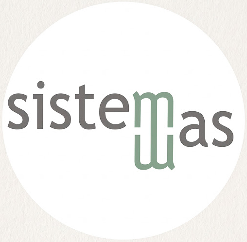
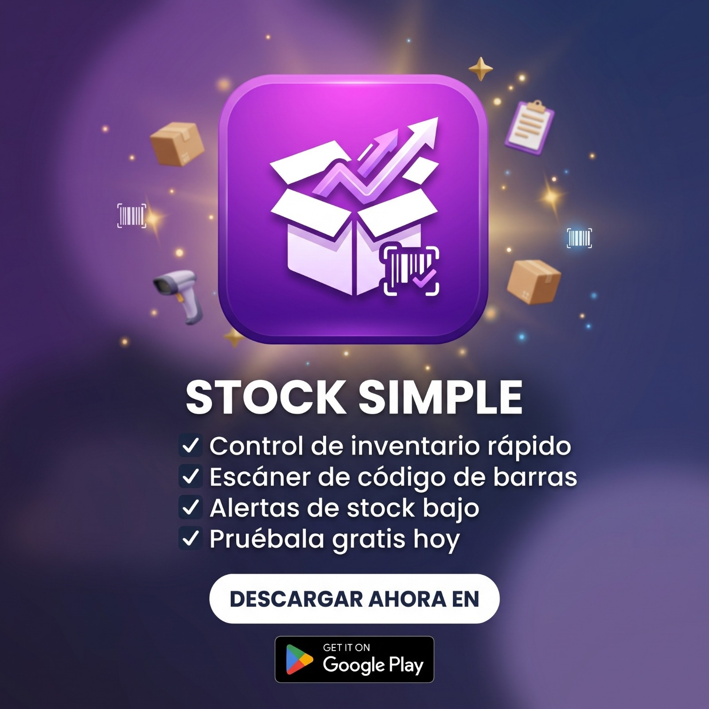

Soluciones Informáticas, Desarrollo de Software y Tutoriales
Bienvenido a la página oficial de Sistemas WAS. Este espacio está dedicado a compartir conocimientos sobre el desarrollo de aplicaciones, programación y bases de datos. El objetivo principal es brindar herramientas y soluciones prácticas tanto en el desarrollo de software de escritorio como en aplicaciones móviles.
Creación de aplicaciones para Android nativas utilizando Java y Android Studio. Migración de proyectos y optimización de código fuente.
Desarrollo de sistemas complejos, arquitectura orientada a objetos en Clarion 9.1 y generación eficiente de reportes para grandes volúmenes de datos.
Aplicación diseñada para la administración integral de finanzas personales, registro rápido diario, categorías a medida y balances claros.
📱 Descargar en Google PlayHerramienta para compartir estudios bíblicos de forma sencilla y profunda. Incluye lecciones completas con referencias bíblicas integradas y funcionamiento sin conexión.
📱 Descargar en Google PlayHerramienta diseñada para acompañar tu vida espiritual, organizar listas de peticiones de intercesión y programar alarmas personalizadas.
📱 Descargar en Google PlayRutina progresiva de hipertrofia y acondicionamiento con mancuernas para casa o gimnasio, con control de descansos e historial de entrenamiento.
📱 Descargar en Google Play
Gestión ágil de inventario y control de existencias desde el móvil con escáner de código de barras y avisos de stock mínimo.
📱 Descargar en Google PlayEncuentra guías paso a paso, análisis de código y soluciones prácticas de programación.
▶ Visitar Canal de YouTube